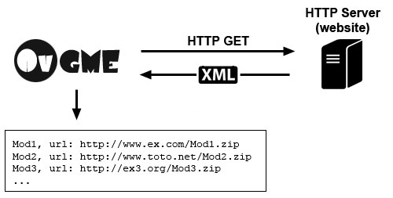

| Принцип работы репозитория |

http://www.example.com/folder/repositoryПримечание: если порт не указан, используется стандартный порт HTTP 80.
www.example.com/folder/repository
www.example.com:8081/folder/repository
http://www.example.com:8081/folder/repository
http://www.example.com/repository.phpДинамическое формирование XML позволяет владельцам репозиториев использовать настоящие базы данных и собственные генераторы XML.
http://www.example.com/repo.asp
http://www.example.com?game=1&type=2